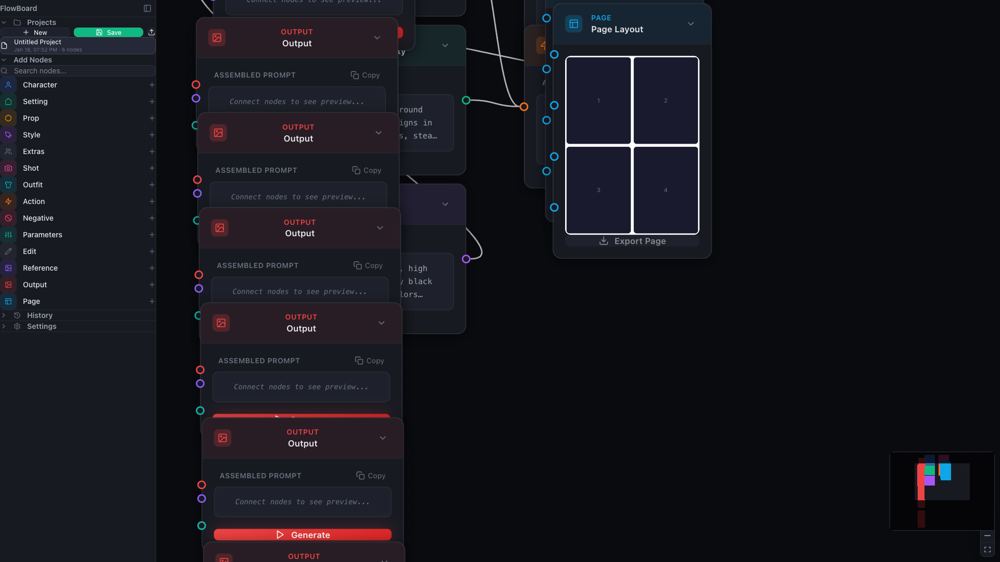

FlowBoard Turns Scene and FX Nodes into Multi-Backend Tools
FlowBoard now lets Scene and FX nodes stay in the same graph while switching between the ThreeJS IDE, Blender, and local or manual fallbacks.

One of the recurring problems in image-tool workflows is that the graph gets tied to one staging environment. If a scene was blocked in a browser tool, the rest of the pipeline assumes that tool stays in the loop. Recent FlowBoard work moves in a better direction: Scene and FX nodes now keep the same graph structure while letting the user switch the backend that actually does the capture or processing.
Scene nodes can now work from more than one source
The Scene node now carries an explicit backend choice instead of assuming a single capture path. In the current implementation, that means the existing ThreeJS IDE remains available, Blender can act as a capture source, and a manual mode keeps the node useful even when no live scene tool is connected. On the Blender path, FlowBoard can capture the current viewport, pull a camera list from the .blend file, and render from a named camera without leaving the graph.
That is a meaningful product shift because it keeps composition planning inside FlowBoard even when the upstream scene is coming from different tools. The graph still owns the scene description, the captured image, and the downstream reference behavior. The backend becomes a choice, not a forked workflow.

FX nodes follow the same model
The FX node now uses the same pattern. Existing IDE-based processing is still there, but the node can also route through a Blender compositor path or a local in-app processor. That matters because it avoids treating Blender support as a special export step. It is just another node backend inside the same graph.
The implementation is pragmatic instead of pretending every effect maps perfectly across tools. Blur, vignette, sharpen, grain, color balance, and lens-style distortion can route through Blender, while effects with no compositor equivalent fall back to the local processor. That kind of fallback is productively boring: the user gets one FX node model, and FlowBoard handles the backend differences without forcing a separate mental model.
The Blender bridge is part of the product surface now
This work is backed by a small localhost HTTP bridge for the Blender add-on rather than a browser-window messaging trick. FlowBoard polls the add-on for status, can ask it for scene and camera information, and uses the same bridge for both scene capture and compositor-style image processing. Just as important, the add-on is now listed in Subscriber Resources with install-from-disk instructions, which turns the Blender path into a real supported companion rather than a hidden experiment.
That packaging detail matters. A backend is not truly part of the product until people can discover it, install it, and understand when to choose it. Putting the add-on alongside the desktop app, skills bundle, and ThreeJS IDE link makes the Blender route legible from the dashboard itself.
Why this is a good FlowBoard direction
FlowBoard gets stronger when a graph can preserve intent while the capture tool changes. The current assembler already treats Scene node captures as composition references downstream, so this backend work is not only about convenience. It reinforces the larger product idea that visual planning, references, and generation context should stay attached to the graph instead of living in disconnected external steps.
In practice, this makes FlowBoard more believable for mixed pipelines. A user can block a shot in the ThreeJS IDE, pull a scene from Blender, or stay in manual mode and still keep one coherent graph. That is a better foundation than betting the whole product on a single staging surface.